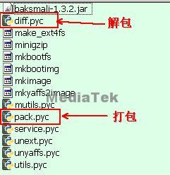

[DESCRIPTION]
MTK在ALPS codebase中已经提供了针对boot.img/recovery.img/system.img(ext4)/userdata.img(ext4)的解包和打包工具，主要针对以下几种应用场景：
(1) 在debug时，需要快速修改或替换image中的文件然后再打包dowload到手机中做验证;
(2) 解包image后替换其中的资源文件或APK，即客制化ROM的操作，然后再打包生成新的ROM;
(3) 客退机，产线download或stress test后无法正常开机，这时需要解包比较image中内容是否有被修改或变化;
[KEYWORD]
打包(pack)
解包(unpack)
boot.img
recovery.img
system.img
userdata.img
[SOLUTION]
- 解包/打包工具路径：alps/mediatek/build/tools/images/
- 对于较早的JB2/JB3/JB5 branch, 工具会存在使用异常，因此请先确认是否有打上ALPS00393168这笔Patch，如果没有的话，请到PMS系统申请。
- 该工具只能解包和打包针对emmc的ext4格式的system.img/userdata.img，针对nand flash的ubifs格式的system.img/userdata.img暂时还不能支援。
环境设定：
1. alps/mediatek/build/tools/images/目录下的工具只能在Linux环境下使用，建议最好是在可以正常build ALPS的机器上来运行以减少软件兼容性方面的问题；
2. 这个工具基于python，python版本(python --version查看版本)请严格按照ALPS_Build_Environment_on_Ubuntu_10.04_64-bit_Installation_SOP_4.x.docx配置，比如ICS/JB版本使用2.6.X，否则可能出现错误：RuntimeError: Bad magic number in .pyc file;
3. alps/mediatek/build/tools/images/目录下的工具可以整体拷贝到一个目录下(tool_dir)，然后编辑~/.bashrc文件把tool_dir添加到$PATH环境变量中，然后source ~/.bashrc使设置生效；
当然也可以直接把要解包的image拷贝到alps/mediatek/build/tools/images/目录下直接在该目录下执行解包/打包工具。

Image解包：
Image解包使用的工具是diff.pyc，用法如下,
* diff.pyc <image_file>
- 把image解包到/tmp/tmpXXXXXX这样的目录下，目录名称会被随机定义.

或
* diff.pyc -o <output_dir> <image_file>
- <output_dir>是自己定义将要解包的目录，可以是绝对路径或相对路径.
- <image_file>是被解包的image，name并不限定于boot.img/recovery.img/system.img/userdata.img，这里不会检查image name，而是会自动判断image的类型；
- 如果解包的是boot.img和recovery.img，额外在<output_dir>的同级目录下还会生成kernel image，命名方法是<output_dir>-kernel
比如要解包boot.img到当前目录下的ramdisk目录，那么执行diff.pyc -o ramdisk boot.img之后，就会在当前目录下生成ramdisk-kernel文件.
- 需要注意的的是解包boot.img/recovery.img时，传入的<output_dir>路径的最后请不要带上"/"，否则生成的kernel image文件会跑到<output_dir>目录下并被命名成-kernel.
diff.pyc可以同时对sparse(透过build flow编译生成)和raw ext4(透过flash tool从手机readback)格式的image进行解包操作。如果您需要从手机中readback回image后再解包，那么请先参考以下这两个FAQ:
[FAQ05169][Storage]如何从手机上readback任意分区的image回来？
[FAQ10347][SP FlashTool]MT6592平台在format,readback,write memory时需要选择对应的emmc region
Image打包：
Image打包使用的工具是pack.pyc，用法如下,
(1) 打包boot.img/recovery.img
* pack.pyc <kernel> <ramdisk> <build_version> <boot/recovery>
- <kernel> 是kernel image文件
- <ramdisk> 包含ramdisk rootfs的目录
- <build_version> 可以是任意一个15个字符的字符串，可以只填入0.
- <boot/recovery>表示生成的是boot image还是recovery image，如果您发现您的版本不支援这个参数的话(default生成boot image)，请提交CR，我们会为您release patch.
- 执行命令后会在<ramdisk>同级目录下生成<ramdisk>.img文件，这就是生成的boot.img或recovery.img.
以上面解包的例子继续说明，打包时就需要执行pack.pyc ramdisk-kernel ramdisk 0 boot/recovery，会在当前目录下生成ramdisk.img，烧写时需要重命名成boot.img或recovery.img.
(2) 打包system.img/userdata.img (ext4 sparse)
* pack.pyc -<partition_size> <source_dir>
- -<partition_size>表示要生成的image分区的size，比如-600就表示600MB。具体分区的size，请参考download时使用的scatter file(MT65XX_Android_scatter.txt)，查看其中ANDROID，USRDATA, CACHE分区的大小;
- <source_dir>目录的名字只能是system, data, cache其中一个，目前不接受其他的目录名，生成的image分别对应的是system.img, userdata.img和cache.img
- 例如pack.pyc -600 system, 把当前目录下的system目录中的内容打包成partition size为600MB的system.img